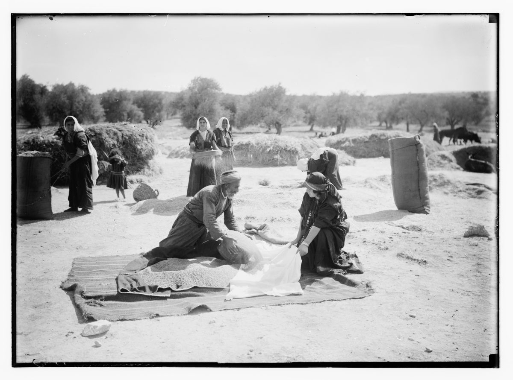

Ruth 3 — The Mister Translation

A photograph from the American Colony in Jerusalem, posed as a scene from the book of Ruth on a working threshing floor of the early twentieth century. It shows verse 15 as the photographers imagined it: the man measuring barley into the cloak the woman holds open, “and he measured six of barley and laid it on her”.

Translator's Notes — verse by verse
“Rest.” Naomi opens with the word of her own prayer at the border of Moab, that Jehovah would grant her daughters-in-law “rest, each in the house of her husband” (Ruth 1:9, now on these pages): there menuchah, here manoach, the same root. The dove of the flood found no manoach for the sole of her foot (Genesis 8:9, now on these pages). The ASV has “shall I not seek rest for thee, that it may be well with thee?”; the NWT 1984 “ought I not to look for a resting-place for you”; the NIV “I must find a home for you”.
Boaz “our kinsman”. Naomi calls Boaz moda’tenu, “our kinsman”, the word of the margin at Ruth 2:1 (now on these pages). He is “winnowing barley at the threshing floor tonight”, tossing the threshed grain into the evening wind to blow the chaff away. Ruth is to wash, anoint herself and put on her clothes, and not “make yourself known to the man until he has finished eating and drinking”. The ASV has “Behold, he winnoweth barley to-night in the threshing-floor”, the NWT 1984 “He is winnowing barley at the threshing floor tonight”.
“I will go down.” Two of Naomi’s verbs are written in the first person and read in the second: the written Hebrew has “and I will go down to the threshing floor” and “and I will lie down”, and the margin “and you will go down” and “and you will lie down”. The written forms may be old spellings of the second person; the reader of the scroll says “you”. Her “clothes” are also written singular and read plural. The NWT 1984 follows the plural, “put your mantles upon you”; the ASV has “put thy raiment upon thee”.
“Uncover his feet.” She is to “uncover his feet, and lie down”: margelotav, “the place of his feet”, a word that stands in this chapter and in one other verse, Daniel 10:6, where it means a figure’s legs. The Hebrew says no more than that, and the narrator says nothing that is not in Naomi’s words. The ASV has “uncover his feet, and lay thee down”; the NWT 1984 “uncover him at his feet and lie down”; the Douay “lift up the clothes wherewith he is covered towards his feet”. Ruth answers, “All that you say to me I will do”; in verse 5 the margin supplies “to me”, which the written text lacks. Josephus says Ruth thought it wrong to refuse anything her mother-in-law asked (Antiquities 5.329, numbered 5.9.3 in Whiston).
“His heart was glad.” Boaz eats and drinks, “and his heart was glad”, vayyitav libbo, the glad heart the father-in-law at Bethlehem pressed on the Levite, “let your heart be glad” (Judges 19:6 and 19:9, now on these pages). He lies down “at the end of the heap of grain”, guarding the harvest. The ASV has “his heart was merry”, the NWT 1984 “his heart was feeling good”, the NIV “was in good spirits”.
“Quietly.” Ruth comes ba-lat, “quietly”, the word used of the Egyptian magicians’ “secret arts” (Exodus 7:22, now on these pages). She does exactly what Naomi said, “according to all that her mother-in-law had commanded her”. The ASV has “she came softly”, the NWT 1984 “she came stealthily”.
“Trembled, and turned over.” “At midnight the man trembled”: vayyecherad, the verb of Isaac, who “trembled with a very great trembling” when he learned whom he had blessed (Genesis 27:33, now on these pages). “And turned over”: vayyillafet, the verb of Samson grasping the pillars at Gaza (Judges 16:29, now on these pages); the form stands in two verses of the Hebrew Bible, there and here. The ASV has “the man was afraid, and turned himself”; the NWT 1984 “the man began to tremble. So he bent himself forward”; the NIV “something startled the man; he turned”.
“Spread your wing.” “Who are you?” “I am Ruth your handmaid. Spread your wing over your handmaid.” Kanaf is the word of Boaz’s own blessing, “under whose wings you have come to take refuge” (Ruth 2:12, now on these pages): Ruth asks him to be the shelter he prayed for. It is also the edge of a man’s cloak, which the law calls his “skirt”, “he shall not uncover his father’s skirt” (Deuteronomy 23:1, now on these pages), and Ezekiel has Jehovah say to Jerusalem, “I spread my wing over you” when he takes her as his wife (Ezekiel 16:8). The ASV has “spread therefore thy skirt over thy handmaid”, the NWT 1984 “you must spread out your skirt over your slave girl”, the NIV “Spread the corner of your garment over me”; the Douay “spread thy coverlet over thy servant”.
“For you are a redeemer.” Ruth names his duty with Naomi’s word from Ruth 2:20: go’el. She has changed her title too. In the field she called herself Boaz’s shifchah, “maidservant” (2:13); here she is his amah, “handmaid”, the word used of a woman of a household who can become a wife, as Bilhah does (Genesis 30:3, now on these pages). The KJV and the ASV have “for thou art a near kinsman”, the NWT 1984 “for you are a repurchaser”.
The last kindness. “You have made this last kindness better than the first”: the first chesed was her loyalty to Naomi (Ruth 2:11); this one is choosing the old kinsman over “the young men, whether poor or rich”, for the sake of the family name. The ASV has “thou hast showed more kindness in the latter end than at the beginning”; the NWT 1984 “You have expressed your loving-kindness better in the last instance than in the first instance”.
“A woman of valour.” “All the gate of my people knows that you are a woman of valour”: eshet chayil, the counterpart of Boaz’s own title, “a mighty man of valour” (Ruth 2:1). The words stand in three verses of the Hebrew Bible: here, Proverbs 12:4, and “A woman of valour — who can find?” (Proverbs 31:10, now on these pages). “The gate” is the town’s assembly, where its business is done, and where Boaz will do his in the next chapter. The ASV has “all the city of my people doth know that thou art a worthy woman”; the NWT 1984 “everyone in the gate of my people is aware that you are an excellent woman”; the KJV “a virtuous woman”. The Greek has “every tribe of my people”.
A nearer redeemer. “It is true that I am a redeemer; yet there is a redeemer nearer than I.” Naomi had said “one of our redeemers” (Ruth 2:20); now the order between them matters. The written Hebrew has an extra word, im, “if”, which the reader of the scroll leaves unsaid. In verse 13 the verb ga’al, “redeem”, comes four times in one sentence. The ASV has “there is a kinsman nearer than I”; the NWT 1984 “there is also a repurchaser closer related than I am”.
“As Jehovah lives.” Boaz binds himself with an oath, “as Jehovah lives”, the oath of Gideon at Tabor (Judges 8:19, now on these pages): if the nearer man will not redeem, “then I will redeem you myself”. Then: “Lie down until the morning.” The ASV has “Tarry this night”, the NWT 1984 “Lodge here tonight”.
“Before one could recognize another.” She rises “before one could recognize another”, yakkir, the verb of “that you should take notice of me” (Ruth 2:10, now on these pages); the written Hebrew spells “before” beterom, the margin beterem. “Let it not be known that the woman came to the threshing floor.” Josephus says Boaz sent her off early to avoid scandal, “especially when there had been nothing done” (Antiquities 5.330, numbered 5.9.3 in Whiston). The ASV has “before one could discern another”, the NWT 1984 “before anyone could recognize another”.
The cloak and the barley. Boaz has her hold out “the cloak that is on you”, mitpachat, a word that stands in one verse of the Hebrew Bible in this form, and measures “six of barley” into it; the Hebrew does not name the measure. The ASV has “he measured six measures of barley”, the NWT 1984 “six measures of barley”, the NIV “six measures of barley”.
He or she. “And he went into the city”: the Hebrew verb is masculine, so Boaz goes to the town, where the next chapter begins at its gate. The Latin reads “she went”, and so does the KJV, “and she went into the city”, and the Douay, “And she carried it and went into the city”. The ASV keeps “and he went into the city”.
“Who are you, my daughter?” Naomi greets her with the question Boaz asked in the dark, mi att, “Who are you?” (v. 9), now meaning “How did it go?”. The ASV keeps the words, “Who art thou, my daughter?”; the NIV has “How did it go, my daughter?”; the Douay “What hast thou done, daughter?”.
“Do not go back empty.” Ruth reports Boaz as saying, “Do not go back empty to your mother-in-law”: reqam, Naomi’s own word at the gate of Bethlehem, “Jehovah has brought me back empty” (Ruth 1:21, now on these pages). The word stands twice in Ruth, there and here. Then Naomi: “Sit still, my daughter, until you know how the matter will fall; for the man will not rest unless he has finished the matter today.” The ASV has “the man will not rest, until he have finished the thing this day”; the NWT 1984 “the man will have no rest unless he has brought the matter to an end today”.
Patterns worth carrying forward
Where this translation keeps the words exact and distinct: “rest” for manoach, as for menuchah at 1:9; “our kinsman” for moda’tenu; “uncover his feet” for gillit margelotav; “his heart was glad”, as at Judges 19; “trembled” and “turned over”; “wing” for kanaf, as at 2:12; “handmaid” for amah, kept apart from “maidservant” for shifchah; “redeemer” and “redeem” for go’el and ga’al; “kindness” for chesed; “a woman of valour” for eshet chayil, as in Proverbs 31:10; “recognize” for hikkir; and “empty” for reqam, as at 1:21.
Echoes paid. The “rest” Naomi prayed for at Ruth 1:9 becomes her plan; the “wing” of Ruth 2:12 becomes Ruth’s request; “one of our redeemers” of 2:20 becomes a question of order; Boaz’s chayil at 2:1 is answered by Ruth’s; and the “empty” of Ruth 1:21 is filled with six of barley.
Echoes planted. “The gate” where Boaz goes to settle the matter, the nearer redeemer, and the land of Elimelech come together in Ruth 4, now on these pages.
Next in this book: Ruth 4 — at the gate of Bethlehem Boaz calls the nearer redeemer before ten elders; he will buy Naomi’s field but not with Ruth, and draws off his sandal; Boaz buys both, the elders bless the marriage, and Obed is born, the grandfather of David.